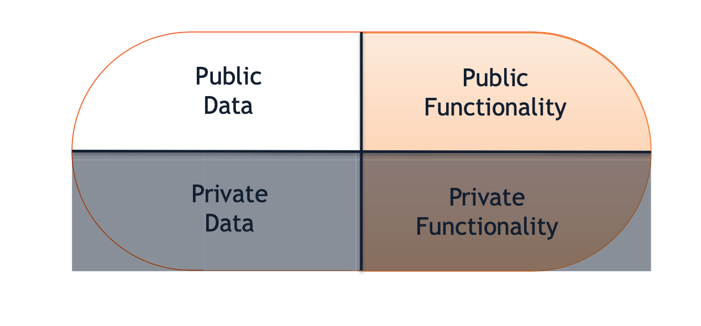
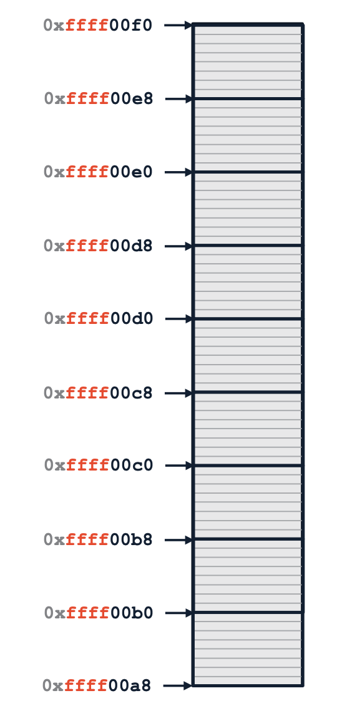
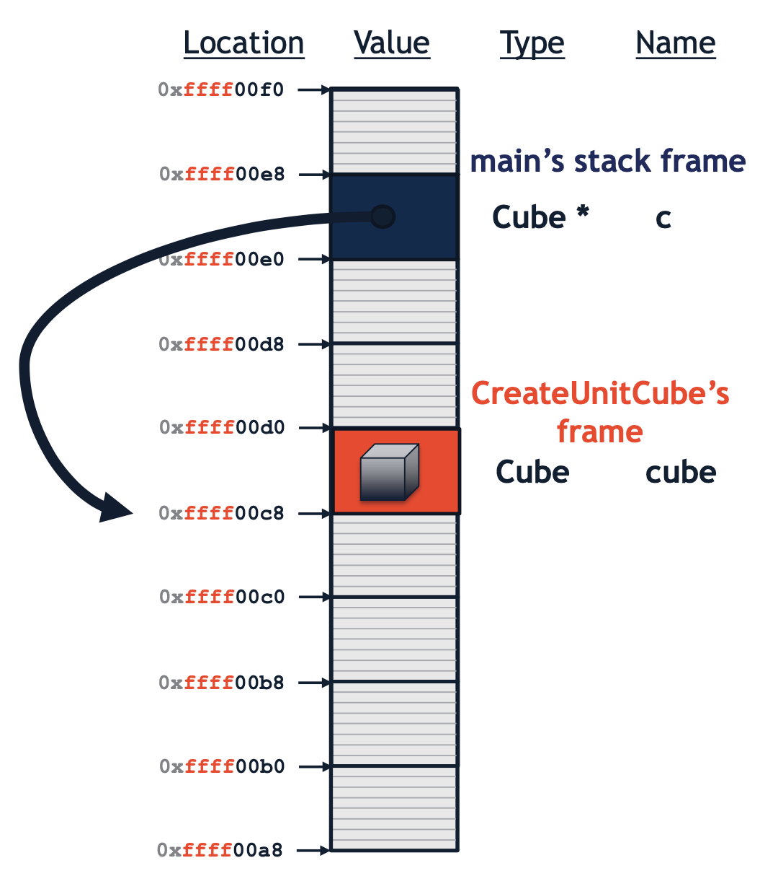
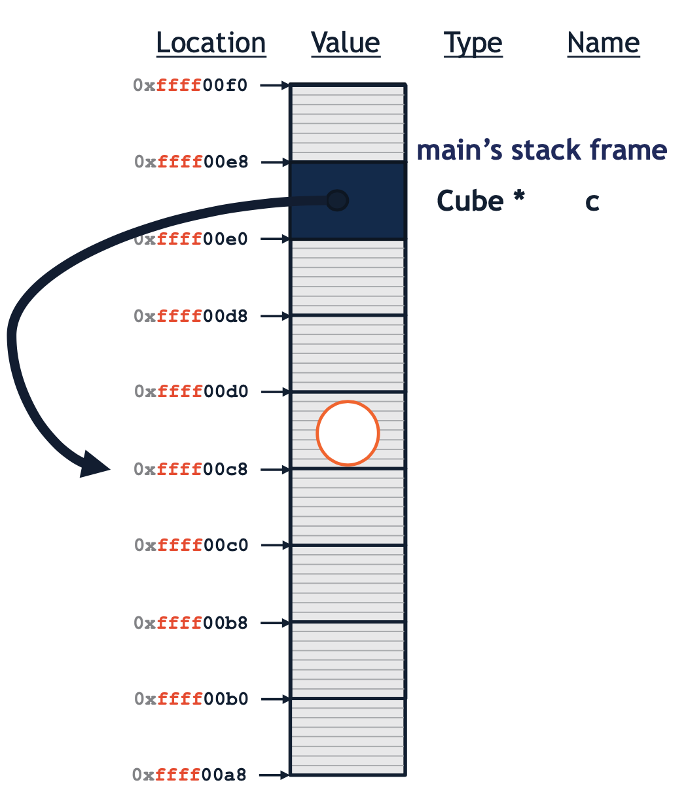
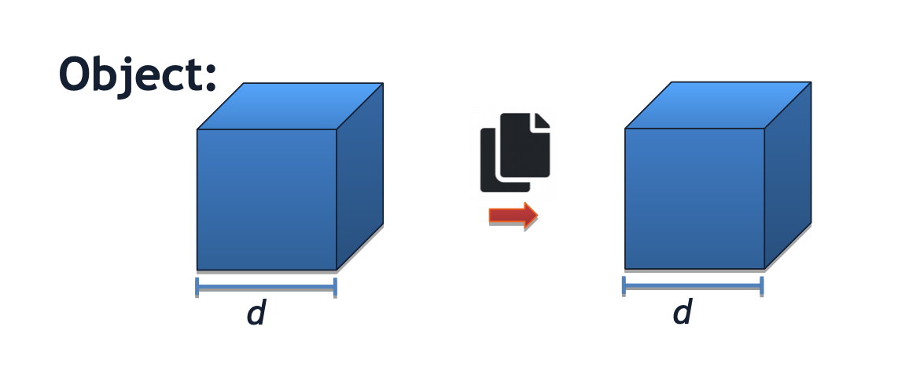
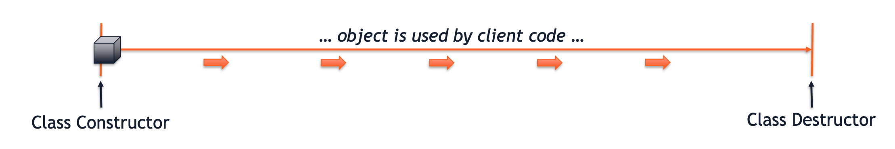

C++ is a strongly typed programming language where every variable has a type, name, value, and location in memory.
1 | int value = 42; |
C++ types
the type of a variable defines the contents of the variable. Every type is either:
Primitive
- int, stores integers
- char, stores single characters/single byte
- bool, stores a Boolean (true or false)
- float, stores a floating point number
- double, stores a double-precision floating point number
- void, denotes the absence of a value
User-defined
- Std
- An unbounded number of user-defined types can exist – we’ll create many of our own!
C++ program
Every C++ program must contain a starting point. By the C++ standard, the starting point is a function:
1 | int main(); |
By convention, the return value of main is 0 (zero) if the program was successful and non-zero on errors.
Classes
Encapsulation #1
C++ classes encapsulate data and associated functionality into an object.

In C++, data and functionality are separated into two separate protections: public and private.
- Public members can be accessed by client code.
- Private members cannot be accessed by client code (only used within the class itself).
Encapsulation #2
In C++, the interface (.h file) to the class is defined separately from the implementation (.cpp file).
A header file (.h) defines the interface to the class, which includes:
- Declaration of all member variables
- Declaration of all member functions
An implementation file (.cpp) contains the code to implement the class (or other C++ code).
C++ standard library
The C++ standard library (std) provides a set of commonly used functionality and data structures to build upon.
Std Organization
The C++ standard library is organized into many separate sub-libraries that can be #include’d in any C++ program.
- The iostream header includes operations for reading/writing to files and the console itself, including std::cout.
1 |
- All functionality used from the standard library will be part of the
std namespace.- Namespaces allow us to avoid name conflicts for commonly used names.
- If a feature from a namespace is used often, it can be imported into the global space with using:
1
using std::cout;
Cube.h
1 | /** |
Cube.cpp
1 | /** |
main.cpp
1 | /** |
Stack Memory
In C++, the programmer has control over the memory and lifecycle of every variable! By default, variables live in stack memory.
Stack memory is associated with the current function and the memory’s lifecycle is tied to the function(When the function returns or ends, the stack memory of that function is released).
Stack memory always starts from high addresses and grows down.

&
In C++, the & operator returns the memory address of a variable.
1 | /** |
Pointer
A pointer is a variable that stores the memory address of the data.
- Simply put: pointers are a level of indirection from the data.
- In C++, a pointer is defined by adding an * to the type of the variable.
1 | int * p = # |
- Given a pointer, a level of indirection can be removed with the dereference operator *.
1 | int num = 7; |
Puzzle
1 | double someOtherFunction(); // Forward decl |


Heap Memory
Heap memory allows us to create memory independent of the lifecycle of a function.
- The only way to create heap memory in C++ is with the
newoperator. - The new operator returns a
pointerto the memory storing the data – not an instance of the data itself.
1 | int * numPtr = new int; |
nullptr
The C++ keyword nullptr is a pointer that points to the memory address 0x0.
- nullptr represents a pointer to
nowhere - Address 0x0 is reserved and never used by the system
- Address 0x0 will always generate an “segmentation fault” when accessed.
- Calls to delete 0x0 are ignored
Arrow Operator (->)
When an object is stored via a pointer, access can be made to member functions using the -> operator:
1 | c -> getVolume(); |
C++ program’s source code organization
.hfiles are “header files”. These usually have definitions of objects and declarations of global functions. Recently, some people name header files with a “.hpp” suffix instead..cppfiles are often called the “implementation files,” or simply the “source files”. This is where most function definitions and main program logic go.
Take the Cube code above as example:
When you write #include
#include “Cube.h” just like in the Cube.cpp file. You have to include the necessary headers in every cpp file where they are needed. However, you shouldn’t use #include to literally include one cpp file in another! There is no need to write #include “Cube.cpp” because the function definitions in the Cube.cpp file will be compiled separately and then linked to the code from the main.cpp file.
The Cube.cpp files and main.cpp files make requests to include various header files. (The compiler might automatically skip some requests because of #pragma once to avoid including multiple times in the same file.) The contents of the requested header files will be temporarily copied into the cpp source code file where they are included. Then, the cpp file with all of its extra included content will be compiled into something called an object file. (Our provided examples keep the object files hidden in a subdirectory, so you don’t need to bother with them. But, if you see a file that has a .o extension, that is an object file.) Each cpp file is separately compiled into an object file. So, in this case Cube.cpp will be compiled into Cube.o, and main.cpp will be compiled into main.o.
Class Constructors
Automatic Default Constructor: If we do not provide any custom constructors, the C++ compiler provides an automatic default constructor for our class for free. The automatic default constructor will only initialize all member variables to their default values. If any custom constructor is defined, an automatic default constructor is not defined.
Custom Default Constructor: The simplest constructor we can provide is a custom default constructor that specifies the state of the object when the object is constructed. We define one by creating:
- A member function with the same name of the class
- The function takes zero parameters.
- The function does not have a return type.
1 | Cube::Cube() // custom default constructor |
Custom Constructors: We can also specify custom, non-default constructors that require client code to supply arguments.
1 | Cube::Cube(double length) |
Copy Constructors
In C++, a copy constructor is a special constructor that exists to make a copy of an existing object.

If we do not provide a custom copy constructor, the C++ compiler provides an automatic copy constructor for our class for free. The automatic copy constructor will copy the contents of all member variables.
A custom copy constructor is:
- Has exactly one argument
– The argument must be const reference of the same type as the class.
1 | Cube::Cube(const Cube & obj) |
Often, copy constructors are invoked automatically:
- Passing an object as a parameter (by value)
- Returning an object from a function (by value)
- Initializing a new object
Assignment Operator
A custom assignment operator is:
- Is a public member function of the class.
- Has the function name
operator=. - Has a return value of a reference of the class’ type.
- Has exactly one argument
– The argument must be const reference of the class’ type.
1 | Cube & Cube::operator=(const Cube & obj) { |
Variable Storage
In C++, an instance of a variable can be stored directly in memory, accessed by pointer, or accessed by reference.
Direct Storage
By default, variables are stored directly in memory.
- The type of a variable has no modifiers.
- The object takes up exactly its size in memory.
1 | Cube c; // Stores a Cube in memory |
Storage by Pointer
- The type of a variable is modified with an asterisk (*).
- A pointer takes a “memory address width” of memory
(ex: 64 bits on a 64-bit system). - The pointer “points” to the allocated space of the object.
1 | Cube *c; // Pointer to a Cube in memory |
Storage by Reference
- A reference is an alias to existing memory and is denoted in the type with an ampersand (&).
- A reference
does not storememory itself, it is only an alias to another variable. - The alias must be assigned when the variable is initialized.
1 | Cube &c = cube; // Alias to the variable `cube` |
Pass by
Identical to storage, arguments can be passed to functions in three different ways:
- Pass by value (default)
- Pass by pointer (modified with *)
- Pass by reference (modified with &, acts as an alias)
Class Destructor
When an instance of a class is cleaned up, the class destructor is the last call in a class’s lifecycle.

An destructor should never be called directly. Instead, it is automatically called when the object’s memory is being reclaimed by the system.
- If the object is on the stack, when the function returns
- If the object is on the heap, when
deleteis used
To add custom behavior to the end-of-life of the function, a custom destructor can be defined as:
- A custom destructor is a member function.
- The function’s destructor is the name of the class,
preceded by a tilde ~. - All destructors have zero arguments and no return type.
1 | Cube::~Cube(); // Custom destructor |
A custom destructor is essential when an object allocates an external resource that must be closed or freed when the object is destroyed. Examples:
- Heap memory
- Open files
- Shared memory
Creating Templated Types
A template variable is defined by declaring it before the beginning of a class or function
1 | template <typename T> |
Inheritance
A base class is a generic form of a specialized, derived class.
Initialization
When a derived class is initialized, the derived class must construct the base class:
- Cube must construct Shape
- By default, uses default constructor
- Custom constructor can be used with an initialization list
1 | /** |
Access Control
When a base class is inherited, the derived class:
- Can access all public members of the base class
- Can not access private members of the base class
Initializer List
The syntax to initialize the base class is called the initializer list and can be used for several purposes:
- Initialize a base class
- Initialize the current class using another constructor
- Initialize the default values of member variables
1 |
|